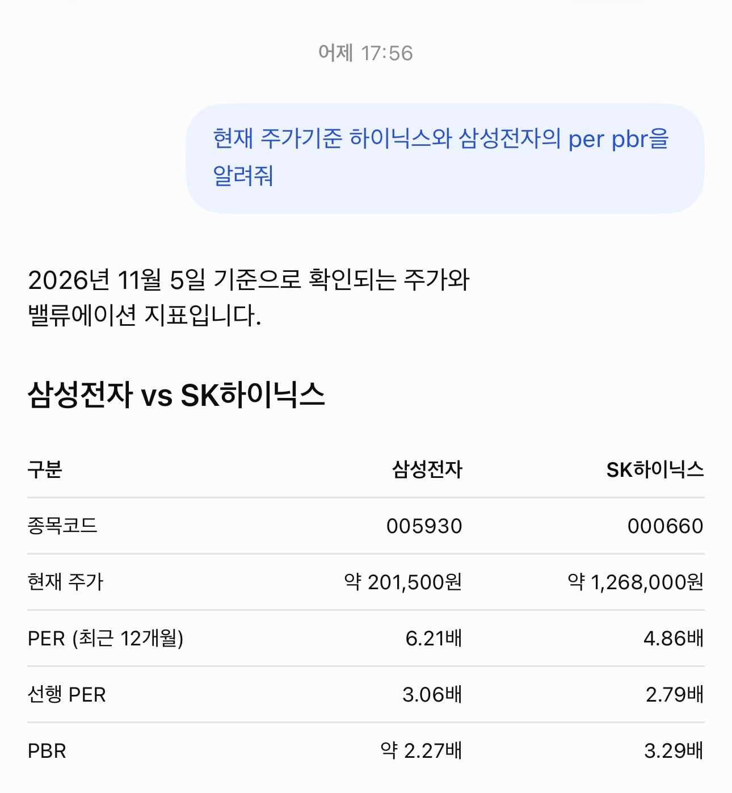

코스피를 대표하는 두 종목의 per가 10이 안됨
어제기준이니 오늘은 더 떨어졌을듯

코스피를 대표하는 두 종목의 per가 10이 안됨
어제기준이니 오늘은 더 떨어졌을듯
초짜 마인드임.. 주식은 지금 당장 실적으로 올라가는게 아님 이미 지금 나온 실적은 300만 닉스로 다 반영했음
그럼 몇년뒤에도 메모리 업황이 좋다에는 물음표인데 그거땜에 떨어지는거지 지금 당장 실적은 아무 의미없다
그리고 누구나 아는 실적은 아무 의미없다
적어도 코스피 기준에서는 이 말이 맞다 ㅋㅋㅋㅋㅋ
계열사 포함해서 하나로 봐야되지않나? ㅋㅋ
주식은 기대감이지
코스피를 믿어?
코스피를 PER 보고 투자한다고? ㅋㅋㅋㅋㅋ
미장기준을 국장에 들이대지마라
뭐 반도체 천년만년 잘 팔릴것도 아니잖아 ai 경쟁 멈추는순간 로봇혁명 없으면 끝인데
1.국장을하지마
2.1원칙을 지켜라
사서 인증해봐